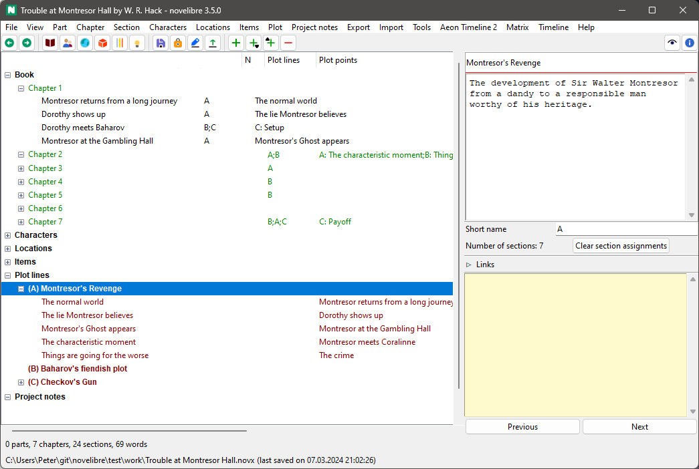
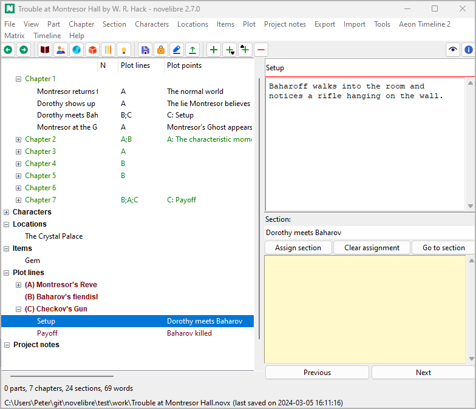

Mit novelibre plotten
Zusammenfassung
Mit novelibre können Sie die Plotstruktur einer bestehenden Geschichte sichtbar machen. Wenn Sie einen Roman konzipieren, können Sie aber auch zuerst eine Plotstruktur festlegen, um im Anschluss die Kapitel und Abschnitte in dieses Gerüst einzufügen oder damit zu verknüpfen. Dazu bietet Ihnen die Software zwei unterschiedliche Techniken an, die Sie alternativ oder in Kombination einsetzen können, ganz wie Sie es brauchen. Wesentlich ist dabei, dass die Plotstruktur gänzlich unabhängig von Ihrer Kapiteleinteilung ist.
Zum einen können Sie Stadien einer dramaturgischen Struktur einsetzen, die dann wie Zwischenüberschriften im Projektbaum sitzen.
Zum anderen können Sie eine eigene Struktur von Plotlinien und dazugehörigen Plotpunkten erzeugen. Jeder Abschnitt Ihres Romans lässt sich dann einer Plotlinie zuordnen, wobei Sie den Bezug im Handlungsraster sichtbar machen können. Außerdem können Sie dann jeden Plotpunkt mit einem Abschnitt verknüpfen.
Darüberhinaus können Sie den Beitrag jedes Abschnitts zum Handlungsfortlauf oder zur gesamten Geschichte über eine Szenenstruktur notieren.
Ein Strukturmodell anwenden
Wenn Sie eine Geschichte entsprechend einem Strukturmodell (z.B. dem Drei-Akt-Modell, der Heldenreise oder dem Save The Cat Beat Sheet) in Stadien zerlegen wollen, fügen Sie einfach die Stadien zwischen den Abschnitten ein, um den Beginn zu kennzeichnen. Das gibt Ihnen farblich abgesetzte Zwischenüberschriften in der Baumansicht. Diese erscheinen nicht im Manuskript.
Mit dem nv_templates-Plugin können Sie vorgefertigte Strukturmodelle aus Markdown-Vorlagendateien laden, oder das Strukturmodell Ihrer Geschichte zur Wiederverwendung abspeichern.
Plotlinien definieren
novelibre bietet Plotlinien als ein mächtiges und flexibles Konzept zum Plotten an.
„Plotlinie“ kann eine Reihe von Bedeutungen haben: Erzählstrang, Figurenbogen, Handlungsfaden, Nebenhandlung, Abfolge von Vorbereitung und Durchführung, und so weiter. Sie können sich eine Plotlinie als eine Strecke vorstellen, entlang derer Plotpunkte angeordnet sind, welche den Fortgang der Handlung charakterisieren. Solchen Plotpunkten können Abschnitte zugeordnet werden, um deren Bedeutung für den Plot anzuzeigen.
novelibre lässt Sie eine beliebige Zahl von Plotlinien definieren.
Jeder Plotlinie können Sie beliebig viele Abschnitte zuordnen.
Jedem Abschnitt können Sie beliebig viele Plotlinien zuordnen.
Eine Plotlinie kann beliebig viele Plotpunkte umfassen.
Ein Plotpunkt kann höchstens einem Abschnitt zugeordnet werden.
Jedem Abschnitt können Sie beliebig viele Plotpunkte zuordnen.
Die Verbindung von Abschnitten und Plotpunkten ist in der Baumansicht in der Spalte „Plotpunkte“ zu sehen.
Sie können Plotlinien auch verwenden, um benannte Verbindungen wie z.B. Vorbereitung → Durchführung oder Ursache → Wirkung zwischen Abschnitten herzustellen, so dass Sie solche Beziehungen verfolgen können, auch wenn die Abschnitte weit auseinanderliegen.
Handlungsraster (Plot grid)
novelibres Handlungsraster ist eine Tabelle mit einer Reihe pro Abschnitt und und einer Zusammenstellung plotrelevanter Metadaten in den Spalten. Die erste sichtbare Spalte enthält Querverweise auf die Abschnitte im Manuskript. Jede Plotlinie hat ihre eigene Spalte im Handlungsraster, wo die Plotliniennotizen zu sehen sind. Das Handlungsraster bietet Ihnen einen bequemen Weg, die Notizen zu den Plotlinien einzutragen und das Große Ganze Ihrer Plotkonstruktion zu überblicken.
Hinweis
Sie können einen Abschnitt einer Plotlinie zuordnen, indem Sie Text in die entsprechende Zelle für die Plotliniennotizen eingeben.
Was ist mit Szenen?
Viele Schreibprogramme unterteilen die Kapitel in Szenen. Vielleicht kommt das daher, dass die zugrundeliegenden Konzepte ursprünglich vom Bühnenstück- oder Drehbuchschreiben stammen, wo dramaturgische Schemata vermutlich zuerst systematisch formuliert wurden. Auf jeden Fall gibt es eine Menge Schreibratgeber, die das Konzept der Szene auch auf Prosatexte anwenden. Eine gängige Methode, die Spannung sicherstellen soll, besteht darin, dass sich sogenannte Aktions- und Reaktionsszenen abwechseln. Wenn Sie so arbeiten wollen, bietet novelibre Ihnen das passende Hilfsmittel. In den Abschnittseigenschaften können Sie Ihre Abschnitte zu Szenen vom Typ „Aktion“ oder „Reaktion“ erklären und die dem jeweiligen Schema entsprechenden Angaben eintragen.
Das Schema ist in den Bucheigenschaften konfigurierbar, so dass Sie auch alternative Methoden der Szenenplanung anwenden können. Und da man den Begriff der Szene so eng definieren kann, dass er nicht auf jeden Abschnitt eines Prosatexts zutrifft, bietet novelibre die Möglichkeit, auch nichtszenische Abschnitte einzubinden, und ihre Funktion in der Geschichte zu beschreiben.
Den besten Gesamtüberblick über Ihre Szenenorganisation erhalten Sie mit dem oben beschriebenen Handlungsraster.
Tipp
Auch wenn Sie Ihre Abschnitte nicht auf diese Weise planen, kann die Methode beim Überarbeiten nützlich sein, wenn es darum geht, Durchhänger oder fragwürdige Abschnitte zu reparieren.